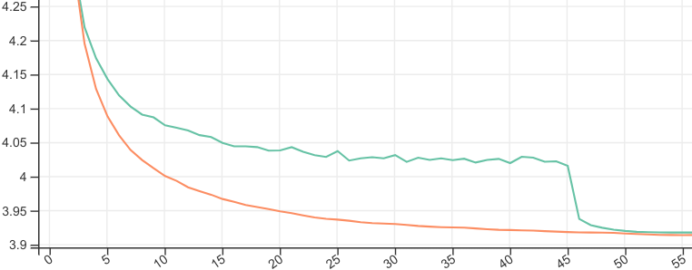

Two-tailed Averaging: The ML Practioner's Guide
Tags: Blog, AI, Date: 2022-12-02
This is a complement to the Two-tailed Averaging paper.
We want to speed up training and improve generalization. One way to do that is by averaging weights from optimization. For example, while training a language model for the down-stream task of summarization, we can save checkpoints periodically, and average the weights in last 10 checkpoints to produce the final solution. This is pretty much what Stochastic Weight Averaging (SWA) does.
Problems with SWA
There is a number of problems with SWA:
10, the "averaging length", must be chosen to maximize performance on summarization.
Naive search for the averaging length needs lots of storage and computation. For example, saving a lot of checkpoints from a single optimization and performing a search after training has very high storage cost. Another option, doing multiple training runs each told to start averaging at a predefined point pays a steep price in computation for lower storage costs.
To control the costs, we can lower checkpointing fequency, but does that make results worse? We can test that with multiple training runs, and pay the cost there.
Also, how do we know when to stop training? We ideally want to stop training the language model when summarization works best with the optimal averaging length at that point. That means the naive search has to be run periodically making it even more expensive.
In summary, working with SWA is tricky because:
The averaging length is a costly to set hyperparameter (that is coupled to other hyperparameters especially to the length of training and the learning rate).
Determining the averaging length after training is both costly (in storage and/or computation) and suboptimal (can miss early solutions).
Two-Tailed Averaging
These are the issues Two-tailed Averaging tackles. The algorithm needs storage for two sets of weights (constant storage cost) and performance (e.g. summarization) to be evaluated periodically. In return, it provides a weight average of approximately optimal length at all optimization steps. Now we can start training that language model, periodically evaluating how the averaged weights are doing at summarization. We can stop the training run anytime if it's getting worse.
This is how Two-tailed Averaged (orange) compares to SWA (green) tuned to start averaging at the point that's optimal for final validation loss:

Downsampling weights
In its proposed form, Two-tailed Averaging incorporates every set of weights produced by the optimizer in both averages it maintains. This is good because Tail, also known as Suffix, averaging theory has nice things to say about convergence to a local optimum in this setting. However, in a memory constrained situation, these averages will not fit on the GPU/TPU, so we must move the weights off the device to add them to the average (which may be in RAM or on disk). Moving stuff off the device can be slow, so we might want to do that, say, every 20 optimization steps. Obviously, downsampling the weights too much will affect the convergence rate, so there is a tradeoff.
Learning rate
Note that with Two-tailed averaging, we use constant learning rate motivated by the fact that the closely related method of Tail averaging guarantees optimal convergence rate learning rate in such a setting.